| 2 | 6 | 8 | 16 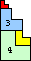 | 18 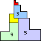 | 26 | 33 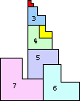 | 38 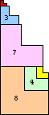 | 49 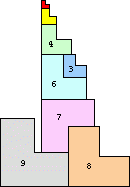 | 56
| 67 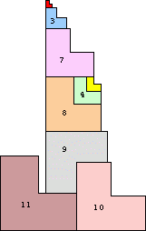 |
Can you find a way to stack L's of side 1 through 10 so that the stack is 56 units high? What is the highest stack of L's you can create with other numbers of L's?
Two people found solutions better than the ones I had found. Erika Brandner found configurations for n=5 and n=7. Clinton Weaver found configurations for n=9 and n=11.
In late 2003, Clinton Weaver made a breakthrough and improved almost all the best known L stacks. His best are shown below.
In 2011, Glisic Vedran extended the solutions up to n=25.
In 2012, Maurizio Morandi improved n=19, 21, and 25.
| 2 | 6 | 8 | 16 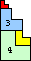 | 18 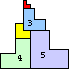 | 26 | 33 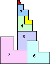 | 38 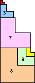 | 49 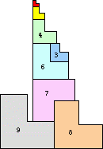 | 56
| 67 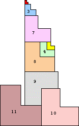 |
| 70 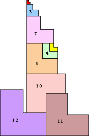 | 89
| 92 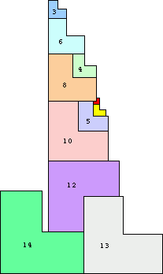 | 109 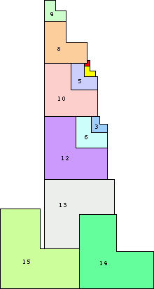 |
| 112 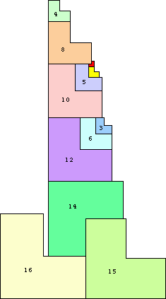 | 129 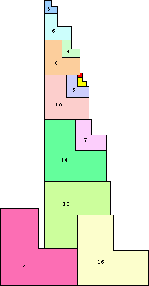 | 132 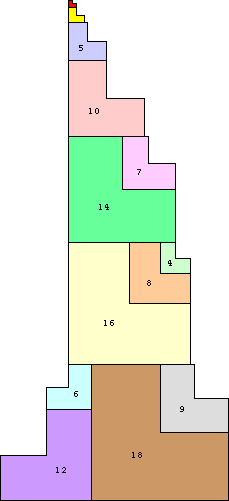 |
| 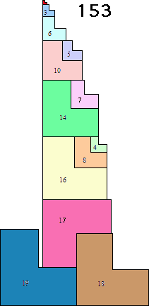 | 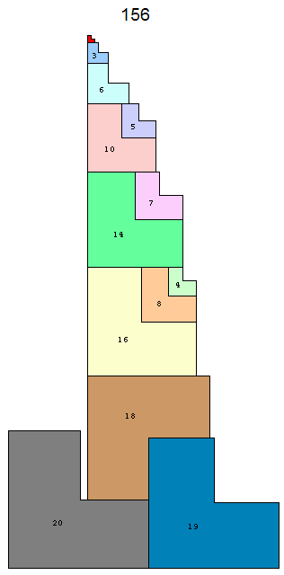 | 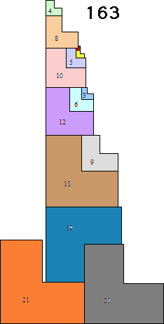 |
| 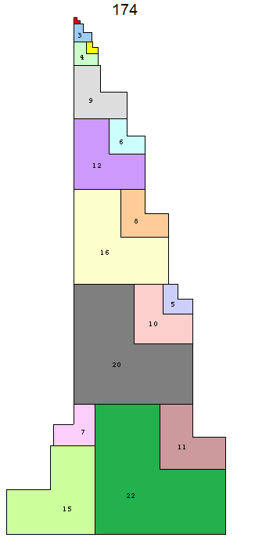 | 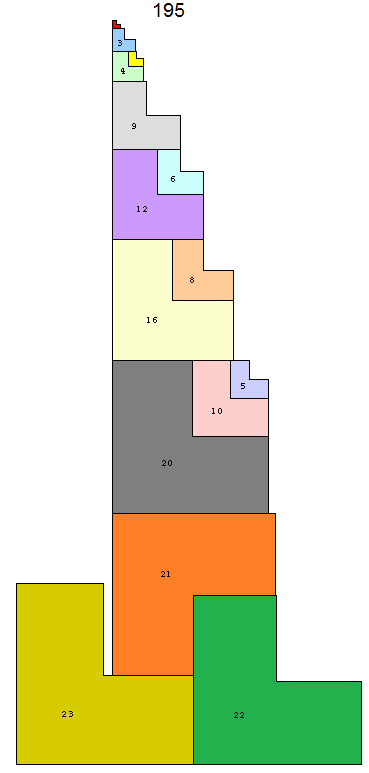 |
| 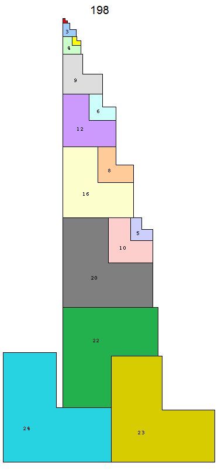 | 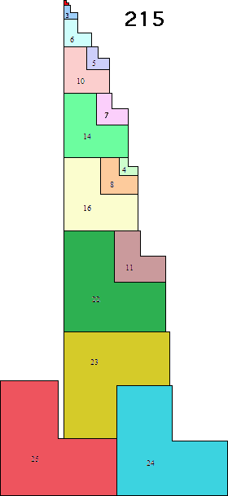 |
| 2 | 6 | 8 | 16 | 22 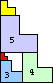 | 30 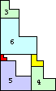 | 38 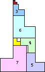 | 50 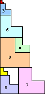 | 58 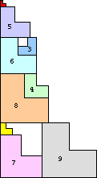 |
| 74 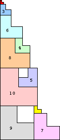 | 84 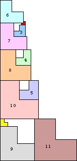 | 104 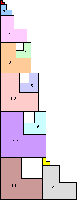 |
If you can extend any of these results, please e-mail me. Click here to go back to Math Magic. Last updated 10/30/11.